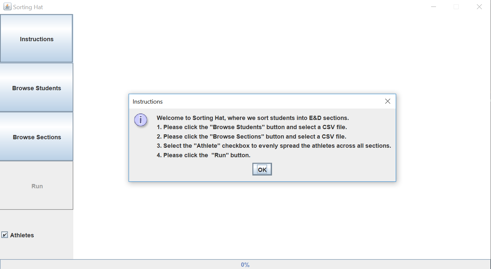
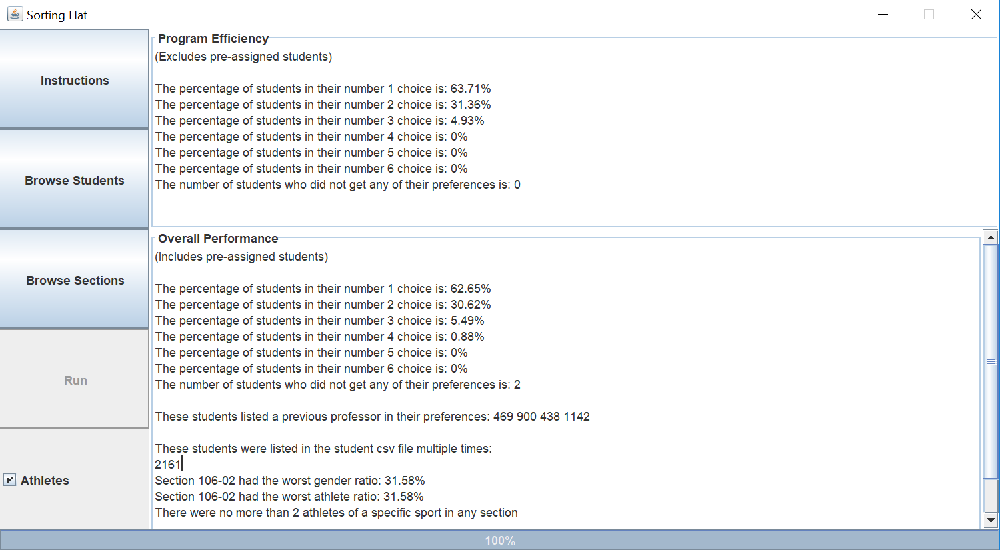

About Me

Welcome to my website. This page contains projects I've worked on, my resume, and updated contact information. If you
would like to view some of my favorite photos, please visit my other
site.
Some personal info + stories could go here.
Projects
This is where I'll post descriptions of some of the projects I've worked on.
Sorting Hat
Sorting Hat is a tool designed to quickly allocate hundreds of first-year students into their mandatory
Exploration and Discovery (E&D) seminar courses. This project was developed over the course of a semester at
Lewis & Clark College in Portland, Oregon, and my team consisted of Lars Mayrand, Nick Tan, Mack Beveridge, Sam
Peers Nitzberg, and James Tostado.



Project 2
description of project 2
Project 3
description of project 3